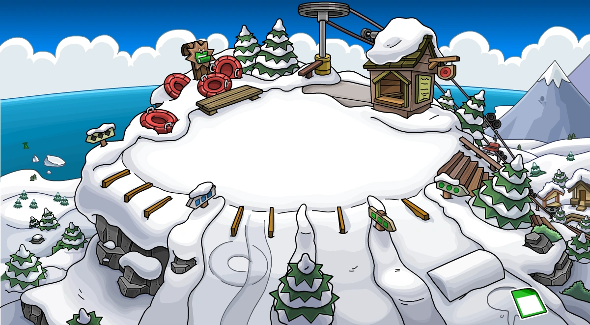

Bem, esse aqui é bem simples né. GitHub. Eu fiquei craque nesse negócio, gosto bastante, ganhei até mesmo 50 pontos em uma prova por causa dele.
Enfim, eu gosto muito da facilidade do GitHub, mesmo que às vezes dá uns problemas com venv. Eu gosto de gatos.
Tharic
X